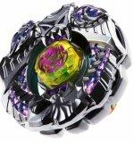

Killerken Balro A230WB
| Killerken Balro A230WB (purple) | |
|  | |
| Number: | BBG-25 |
|---|---|
| System: | Beyblade Zero-G |
| Type: | Balance |
| Element: | Darkness + Water |
Contents
Note: In the TAKARA-TOMY release, this Beyblade and its twin Saramanda Balro DF145SWD are exclusive to the Ultimate Synchrom DX Sets. The red edition is limited to the BBG-25 Ultimate Synchrom DX Set Defense & Stamina Type.
Stone Face: Balro
- Weight: grams
This Stone Face has a printed mark representing a Balrog head, based on a mythical beast notably featured in the Lord of the Rings saga.
Chrome Wheel 1: Balro
| Weight: | 31.45 grams | Full Width: | 47.63 mm | Height: | 6.37 mm |
Like all Chrome Wheels, Balro possesses an asymetrical design: at the top is a sculpted horned demon head with an abnormal, star-shaped right eye. Most of the Balro Chrome Wheel's surface is dedicated to huge rigged horns, while the bottom illustrates a carved bat surrounded by flames. The overall structure forms a jagged hexagonal shape.
Chrome Wheel 2: Killerken
- Weight: 30.45 grams
Unlike most of the other Chrome Wheels, Killerken possesses a design which is generally well balanced. Indeed, on one side of the Chrome Wheel, a series of curved lines in the shape of tentacles can be observed in the design and, after a short interruption created by a trapezoid protrusion, the same series of tentacles is reproduced, however it is mirrored. At the other side of the trapezoid, the orb from the Crystal Wheel can be seen, surrounded by a design which resembles the beak of an octopus. The wider parts of the tentacles accumulate near the edges of Killerken, leaving only deeply engraved lines near its center.
Track: Armor 230
- Weight: 5.5 grams
The A230 Track simply adds upon the regular design of 230. Pyramidal shapes are attached to its core on four sides, with steps all around those pyramids, reminescent of the architecture of most Mesoamerican pyramids. Half of the shapes, opposite to each other, are slightly smaller than the other two.
Bottom: Wide Ball
| Weight: | 0.7 gram | Full Width: | 15.73 mm | Tip Width: | 8.95 mm | Full Height: | 9.05 mm |
WB used to be widely considered the best Defense bottom when launched at 80% power with a Beylauncher. It has since been outclassed by the likes of RS, RSF, and CS.
Use in Defense Customization
WB was once one of the preferred choices of Bottom for Defense customizations, however, it has been outclassed in performance by RS in the top-tier customization MF-H Earth Bull GB145WB.
Other Versions
- Saramanda Balro DF145SWD - BBG-24 Ultimate Synchrom DX Set Attack & Balance Type (Red)